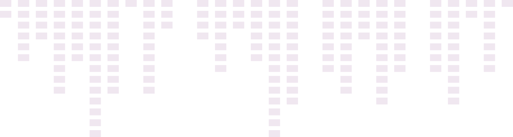
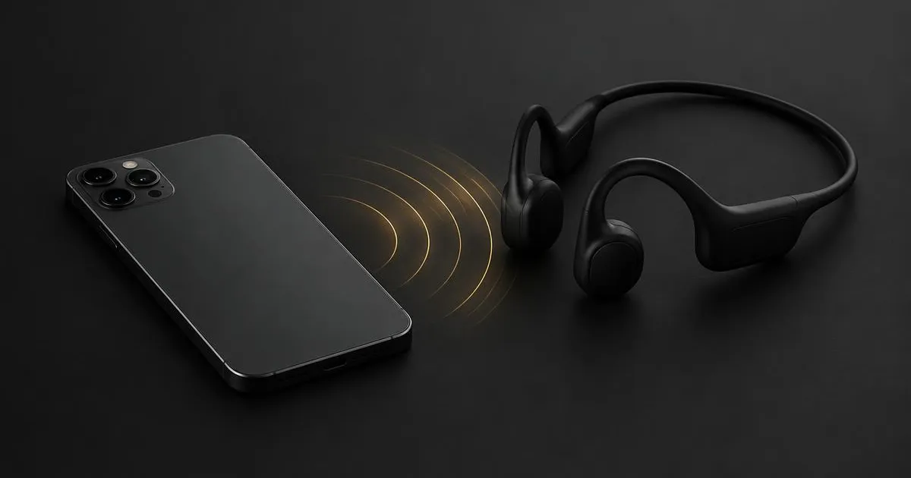
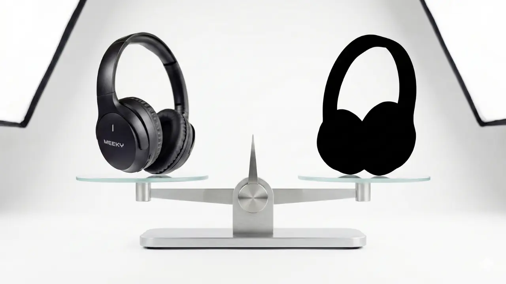
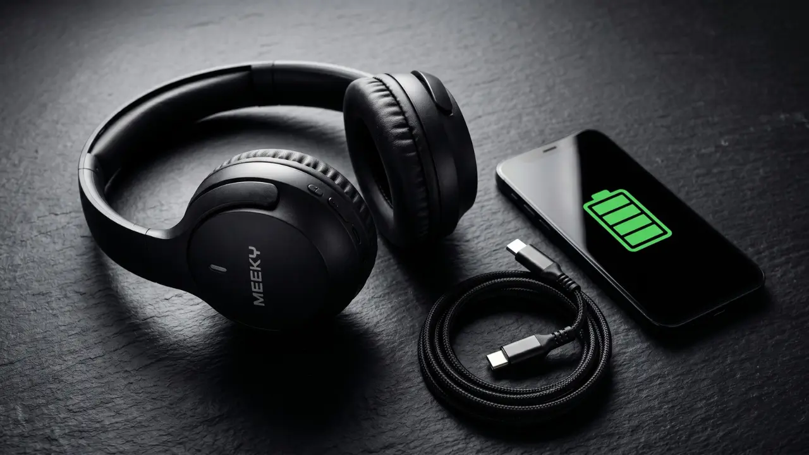
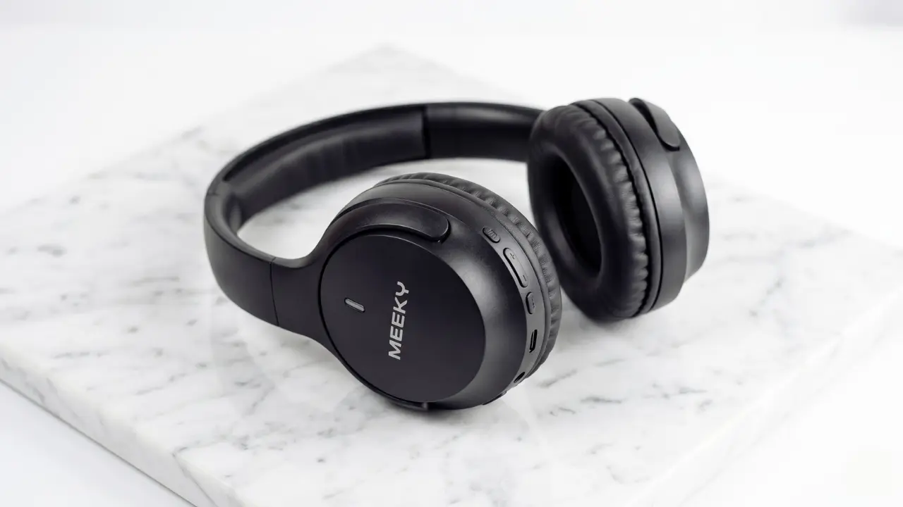
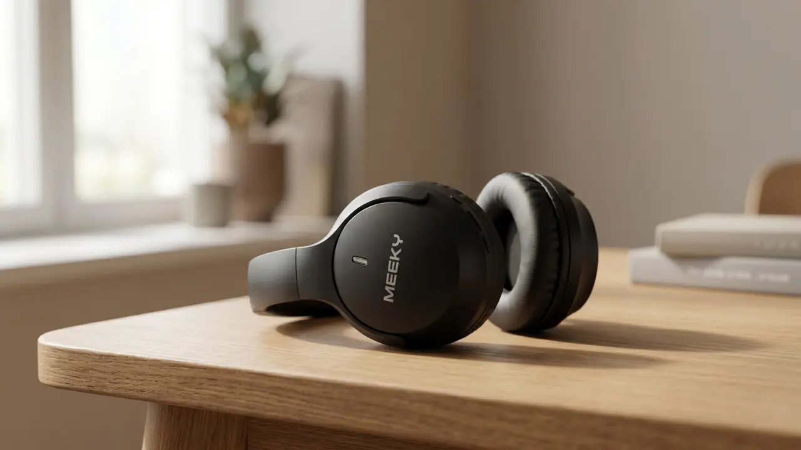
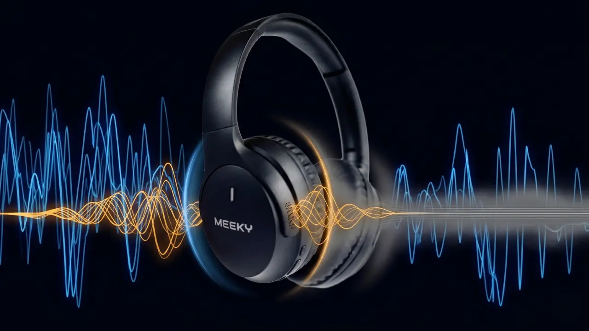
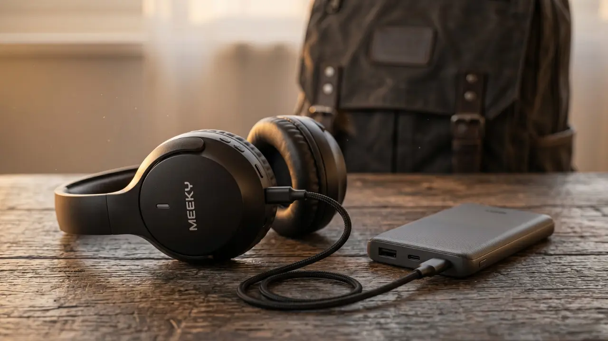

Conhecimento para
ouvir o seu mundo.
Guias, comparativos e ideias para escolher seu fone e aproveitar cada momento.
Sua próxima leitura começa aqui.
GUIAS E COMPARATIVOS · 37 ARTIGOS
Black Friday 2026: como escolher fone sem cair em armadilha
Checklist prático para comprar fone na Black Friday 2026: ANC real vs ANC de marketing, codec, bateria medida, garantia, nota fiscal, Anatel e loja com CNPJ.
Ler artigo →
Presente de Natal 2026: guia de fone Bluetooth por perfil
Guia de presente de Natal 2026: como escolher o fone Bluetooth certo para quem trabalha em casa, estuda, corre, pedala ou treina. Sem promessas de prazo.
Ler artigo →
Corrida de rua no fim de ano: treinar com fone de condução óssea
Como treinar para as provas de fim de ano com fone de condução óssea: atenção ao ambiente, LED, IPX5, bateria e regulamento das provas.
Ler artigo →
Condução óssea ou ANC: qual fone escolher?
Comparativo honesto entre fone de condução óssea (Meeky Motion 1, sem ANC) e headphone com ANC (Meeky F5 ANC Pro) por situação de uso.
Ler artigo →
Bluetooth 6.0 em fone: o que muda de verdade
O que o Bluetooth 6.0 muda para quem usa fone: conexão, estabilidade, consumo e alcance, e por que tudo depende também do celular.
Ler artigo →
Fone de condução óssea para corrida: vale a pena?
Veja como o fone de condução óssea funciona na corrida, vantagens, limites e o que checar antes de comprar. Guia direto, sem promessas exageradas.
Ler artigo →Condução óssea vs fone intra-auricular: qual escolher?
Compare fone de condução óssea e fone intra-auricular em som, conforto, isolamento, bateria e uso. Descubra qual combina com a sua rotina.
Ler artigo →Fone de condução óssea para ciclismo e treino
Fone de condução óssea para pedalar e treinar: o que muda, cuidados com trânsito, encaixe com capacete e o que checar antes de comprar.
Ler artigo →Fone de condução óssea faz mal para a audição?
Mitos e verdades sobre fone de condução óssea e audição. Entenda como funciona, riscos de volume alto e quando procurar um profissional.
Ler artigo →Meeky Motion 1: especificações, preço e lançamento
Meeky Motion 1, fone de condução óssea por R$ 749,90 em até 6x sem juros. Veja ficha técnica completa, o que tem e o que não tem, garantia e envio.
Ler artigo →Fone de condução óssea: como funciona e vale a pena?
Entenda como funciona o fone de condução óssea, vantagens, limites e para quem vale a pena. Guia completo com tabela comparativa e checklist de compra.
Ler artigo →Headphone Over-Ear ANC ou Earbuds ANC: Qual Escolher para Trabalho e Estudo
Comparativo de formato (não de marca) para decidir entre concha over-ear e in-ear: isolamento, conforto em uso prolongado, bateria e cancelamento reais.
Ler artigo →
Multiponto Bluetooth na Prática: Como Conectar Notebook e Celular ao Mesmo Tempo
Guia técnico do multipoint no Bluetooth 5.4 do Meeky F5: passo a passo para parear em dois dispositivos e casos de uso reais no dia a dia.
Ler artigo →
Guia de Presente Corporativo: Brindes de Tecnologia que Fazem Sentido pro RH
Como o RH escolhe brinde corporativo de tecnologia sem errar: utilidade real, percepção de qualidade, custo por unidade em volume e homologação Anatel.
Ler artigo →
Meeky F5 ANC Pro vs Redmi Buds 6 Active: Comparativo Completo 2026
Comparativo honesto entre Meeky F5 ANC Pro (headphone over-ear com ANC ativo) e Redmi Buds 6 Active (earbud sem ANC): bateria, cancelamento, Bluetooth 5.4 e garantia no Brasil.
Ler artigo →
LDAC vs AAC vs SBC: Qual Codec Bluetooth Escolher (2026)
Diferença real entre LDAC, AAC e SBC em headphones Bluetooth: qualidade, latência, compatibilidade Android/iPhone e quando importa de verdade.
Ler artigo →
Headphone com ANC Funciona em Avião? A Resposta Definitiva
Por que avião é o cenário ideal para ANC, como o cancelamento processa o ruído contínuo do motor e o que esperar durante o voo.
Ler artigo →Headphone ANC para Concurseiro: Vale a Pena em 2026?
Como o cancelamento de ruído ajuda quem estuda para concurso em casa, biblioteca ou café — e o que considerar antes de comprar.
Ler artigo →
ANC Prejudica a Qualidade do Som? A Verdade Sem Marketing
ANC ativo pode gerar leve hissing e artefatos. Entenda quando ligar, quando desligar e como isso afeta a qualidade da música.
Ler artigo →Headphone ANC para Autismo e Hipersensibilidade Sensorial: Guia Completo
Como o cancelamento de ruído ativo pode ajudar em hipersensibilidade auditiva, o que considerar em conforto, pressão e uso responsável.
Ler artigo →
Quanto Dura a Bateria de Headphone ANC na Prática? (Teste Real)
Bateria anunciada vs real: fatores que afetam, como calcular para seu uso e comparativo 70h Meeky vs 40h QCY vs 44h JBL em dias reais.
Ler artigo →Headphone ANC para Programador: O Que Considerar Antes de Comprar
Foco profundo, calls, multiponto, LDAC para Android e compatibilidade — guia objetivo de headphone ANC para desenvolvedor em 2026.
Ler artigo →Bluetooth 5.4 vs 5.3 vs 5.0: Faz Diferença no Headphone?
Diferenças reais entre Bluetooth 5.4, 5.3 e 5.0 em headphones: latência, alcance, consumo, LE Audio — o que importa de fato.
Ler artigo →
Meeky F5 ANC Pro vs Anker Soundcore Q20i: Qual Escolher em 2026?
Comparativo direto entre Meeky F5 ANC Pro e Anker Soundcore Q20i em 2026: bateria, ANC, Bluetooth, LDAC, multiponto, garantia e suporte no Brasil.
Ler artigo →Melhor Headphone ANC até R$300 no Brasil (2026): Guia Definitivo
Guia definitivo do melhor headphone ANC até R$300 no Brasil em 2026: Meeky F5 ANC Pro, QCY H3, Edifier W820NB Plus e JBL 770NC comparados em testes reais.
Ler artigo →Meeky F5 ANC Pro vs QCY H3 vs JBL 770NC: Comparativo Real (2026)
Comparativo honesto entre Meeky F5 ANC Pro, QCY H3 e JBL Tune 770NC em testes reais de 2026: ANC, bateria, LDAC, conectividade, garantia e custo-benefício.
Ler artigo →O que é cancelamento de ruído ativo (ANC)? Guia direto e sem enrolação
Entenda o que é ANC, como os microfones cancelam o ruído em tempo real, a diferença para o cancelamento passivo e quando vale a pena investir.
Ler artigo →Headphone ANC com 70 horas de bateria: por que isso muda tudo
Entenda por que a bateria com ANC ativo é o dado mais importante na hora de escolher um headphone — e como calcular quantos dias de uso você realmente ganha.
Ler artigo →Meeky F5 ANC Pro vs QCY H3: comparativo honesto com dados reais
Meeky F5 e QCY H3 custam quase o mesmo em abril de 2026. Mas qual entrega mais no dia a dia? Comparamos bateria, ANC, microfone e garantia com dados reais.
Ler artigo →Meeky F5 ANC Pro — Review completo: vale a pena em 2026?
Review completo do Meeky F5 ANC Pro: analisamos cancelamento de ruído, qualidade de áudio, conforto, bateria de 70 horas, microfone e custo-benefício. Vale a pena comprar?
Ler artigo →Headphone ANC para academia: funciona mesmo durante o treino?
Headphone com cancelamento de ruído na academia: vale a pena? Explicamos o que o ANC resolve no treino, o que não resolve, e qual é o melhor fone para quem treina com foco e intensidade.
Ler artigo →Headphone ANC para estudar: concentração de verdade ou só marketing?
O headphone com ANC realmente ajuda a estudar? Explicamos a ciência por trás da concentração, como o cancelamento de ruído impacta o aprendizado e qual é o melhor fone para estudar em 2026.
Ler artigo →Headphone para home office com ANC: o que ninguém te conta antes de comprar
Descubra por que o headphone certo para home office vai além do preço. ANC, microfone, bateria e conforto — o que realmente importa para quem trabalha em casa.
Ler artigo →70 horas de bateria no headphone: o que muda na sua rotina (e por que isso importa mais do que parece)
Entenda o que 70 horas de autonomia significam na prática, por que a bateria importa mais do que parece e como isso muda o dia a dia de quem usa o fone como ferramenta de trabalho.
Ler artigo →Headphone com cancelamento de ruído vale a pena? Tudo que você precisa saber em 2026
Descubra se o headphone com cancelamento de ruído ativo (ANC) realmente vale a pena. Explicamos como funciona, para quem é indicado e como escolher o melhor custo-benefício.
Ler artigo →JBL Tune 770NC ou Meeky F5 ANC Pro: R$ 202 de diferença — o que você realmente ganha?
JBL 770NC custa R$ 499. Meeky F5 custa R$ 297. Ambos têm 70h de bateria. Comparamos os dois com dados reais e uma reclamação pública sobre o ANC do JBL.
Ler artigo →ANC ativo vs cancelamento passivo: qual a diferença que importa na prática
Muitas marcas vendem fones com 'ANC' que na prática é cancelamento passivo melhorado. Entenda a diferença real e como identificar antes de comprar.
Ler artigo →Nenhum artigo encontrado. Tente outra palavra.
Fim das leituras